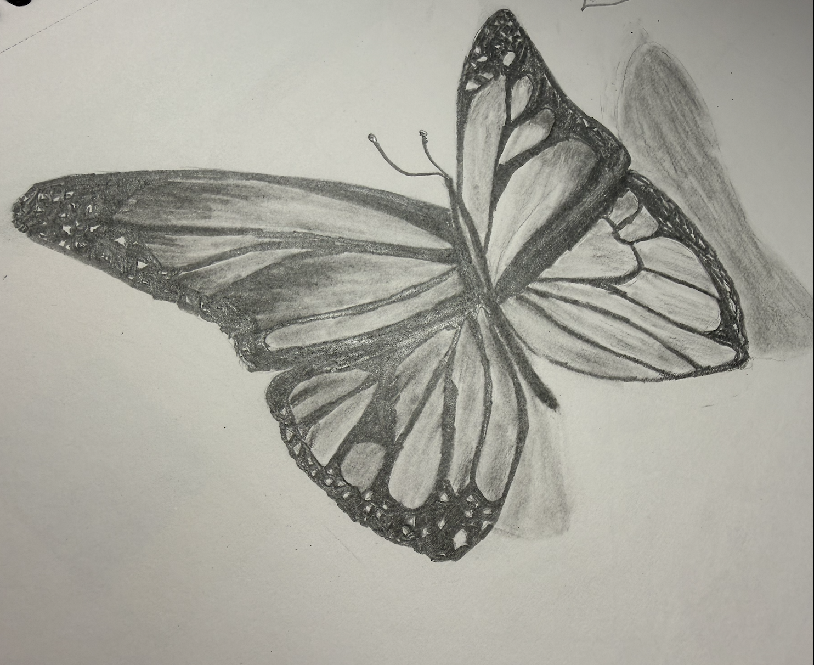
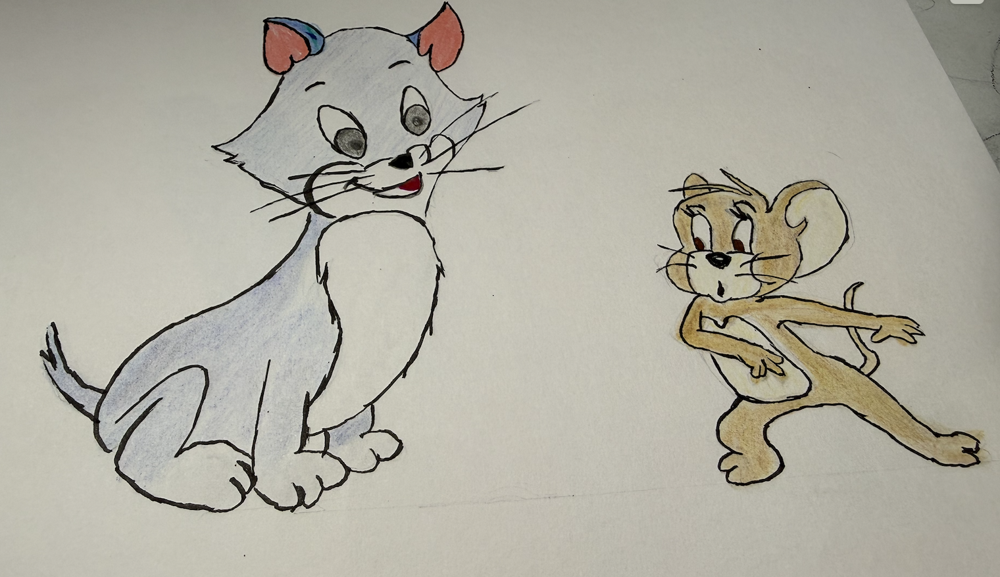
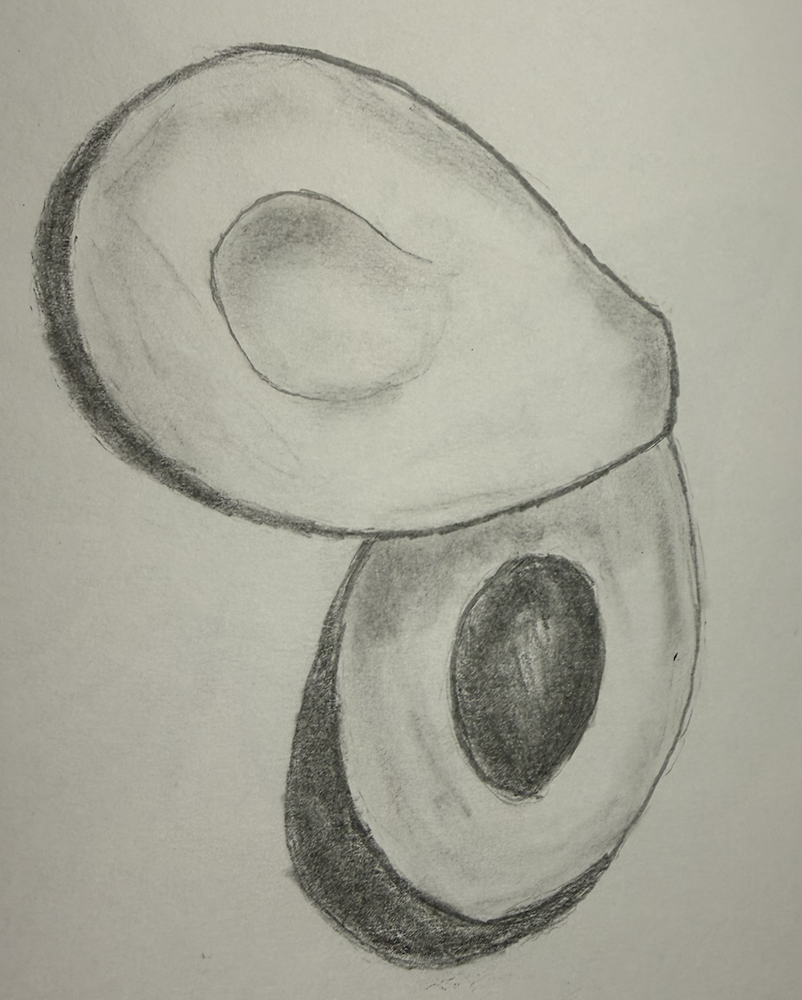

SKETCHBOOK
A little time away from screens.
Sketching is a simple hobby I enjoy in my spare time. I usually find something online that I like and try to recreate it. I'm not an artist, but I find it relaxing and can completely switch off while I'm drawing.


